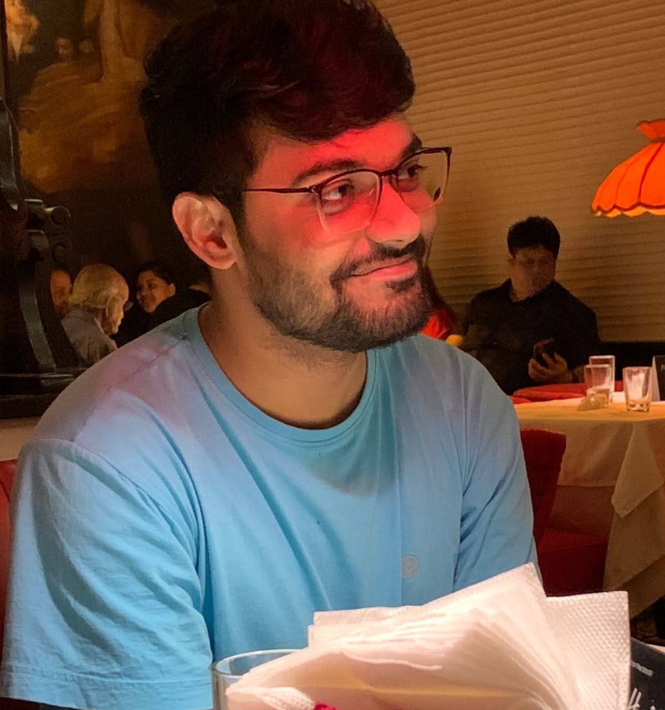

Anish Chakrabarty
Postdoctoral Researcher
LTCI, Télécom Paris
Institut Polytechnique de Paris
Office: 5C23
Email: anish [dot] chakrabarty [at] telecom-paris [dot] fr
I am a postdoctoral researcher in the Signal, Statistics and Machine Learning Team at Information Processing and Communications Laboratory (LTCI), Télécom Paris. I completed my PhD in Statistics from the Theoretical Statistics Mathematics Unit at Indian Statistical Institute (ISI), Kolkata where I was advised by Prof. Swagatam Das and Prof. Probal chaudhuri. Before joining ISI, I received a Master of Science in Statistics from Indian Institute of Technology, Kanpur.
I am broadly interested in high-dimensional statistics and statistical machine learning. My theoretical research centers around statistical optimal transport, deep generative models, robust statistics, and expressivity of attention-based architectures.
My papers can be found below or on my Google Scholar page. My PhD thesis can be found here.
Papers
Statistical Regeneration Guarantees of the Wasserstein Autoencoder with Latent Space Consistency
Anish Chakrabarty, and Swagatam Das.
NeurIPS (Spotlight), 2021.
On Strong Consistency of Kernel k-means: A Rademacher Complexity Approach.
Anish Chakrabarty, and Swagatam Das.
Statistics & Probability Letters, 2022.
On Translation and Reconstruction Guarantees of the Cycle-Consistent Generative Adversarial Networks.
Anish Chakrabarty, and Swagatam Das.
NeurIPS, 2022.
Interval Bound Interpolation for Few-shot Learning with Few Tasks.
Shounak Datta, Sankha Subhra Mullick, Anish Chakrabarty, and Swagatam Das.
ICML, 2023.
Lost in Translation: GANs' Inability to Generate Simple Probability Distributions*.
Debanjan Dutta, Anish Chakrabarty, and Swagatam Das.
ICLR Tiny Papers, 2024.
Enhancing Contrastive Clustering with Negative Pair-guided Regularization.
Abhishek Kumar, Anish Chakrabarty, Sankha Subhra Mullick, and Swagatam Das.
TMLR, 2024.
Information Preservation with Wasserstein Autoencoders: Generation Consistency and Adversarial Robustness.
Anish Chakrabarty, Arkaprabha Basu, and Swagatam Das.
Statistics and Computing, 2025.
Locally Robust Alignment Between Distinct Spaces.
Anish Chakrabarty, Sankha Subhra Mullick, and Swagatam Das.
Stat, 2025.
On Relation-Aware Slicing in Cross-Domain Alignment*.
Dhruv Sarkar, Aprameyo Chakrabartty, Anish Chakrabarty, and Swagatam Das.
AISTATS, 2026.
On Robust Cross Domain Alignment.
Anish Chakrabarty, Arkaprabha Basu, and Swagatam Das.
Under review, 2025+.
DeepMALC: Integrating Mode Seeking with Deep Manifold Learning for Automatic Clustering.
Abhishek Kumar, Anish Chakrabarty, and Swagatam Das.
Under review, 2025+.
On the Existence of Universal Simulators of Attention.
Debanjan Dutta, Anish Chakrabarty, Faizanuddin Ansari, and Swagatam Das.
Under review, 2025+.
(* Projects mentored)